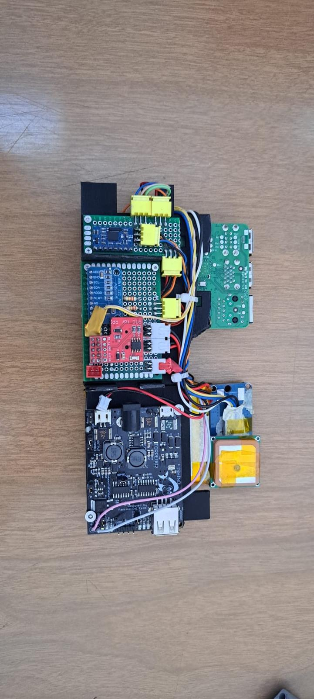
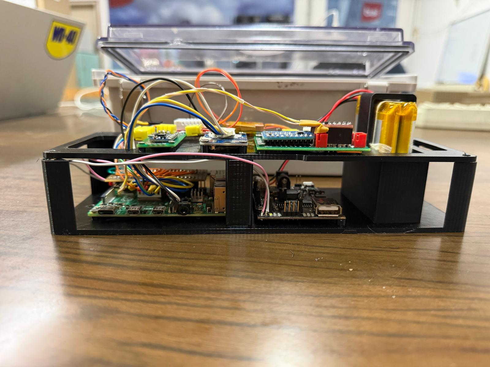

Progetti parte harware
La "scatola"
Nel corso degli anni precedenti è stata sviluppata una prima versione di una "scatola" per l'acquisizione di dati in tempo reale da montare sulla barca così da poter migliorare progettazione e prestazioni.
Al momento questa presenta un Raspberry Pi 4 che si occupa, tramite un software python scritto internamente dal team, di prelevare e salvare in memoria dati da vari sensori come GPS, Imu a 9 assi, temperatura ed umidità.
To Do per migliorarela "scatola"
- Cambio della architettura di base
- Sviluppo di PCB ad hoc
A seguito diricerche e riflessioni, si è deciso di cambiare architettura e di cominciare ad utilizzare microcontrollori, che risultano essere più piccoli e potenti, anche in vista del futuro, in cui si vuole implementare un controllo di volo per moth interamente elettronico.
Per migliorare ulteriaromente le prestazioni e per ridurre le dimensioni dell'harware, si è deciso di cominciare a creare una o più PCB disegnate dal reparto in maniera da miniaturizzare il tutto e da rendere il tutto più efficiente.
Progetti parte Software
Mothics
Scrittura di un nuovo Mothics in C per ESP32
Sviluppo di una vero e proprio sistema di volo elettronico

